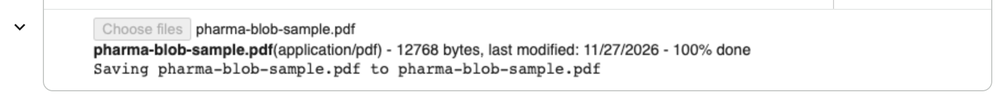
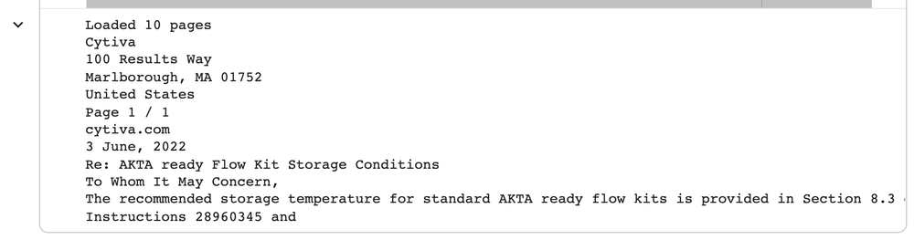
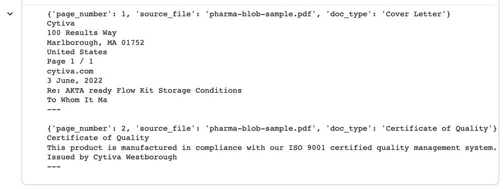
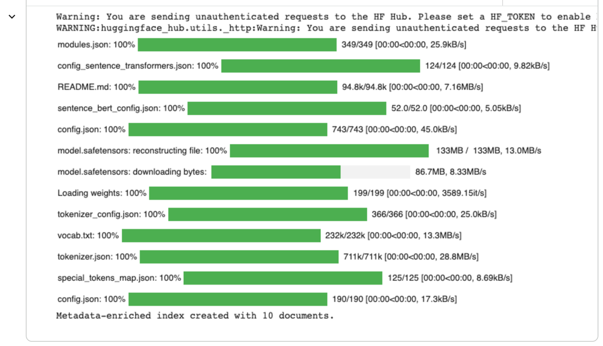
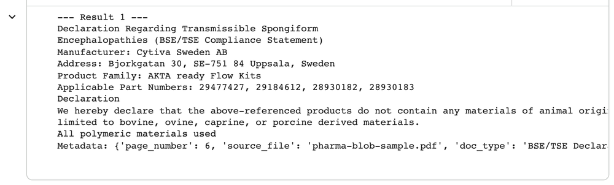

You'll run the Extern expert's notebook Tagging Chunks with Metadata in LlamaIndex. It walks you through loading a multi-page PDF, enriching it with metadata, and retrieving filtered results using LlamaIndex.
pharma-blob-sample.pdf. It's the same 10-page file you labelled in the reading Find Where Each Document Starts in a Bundled PDF.These cells don't use Gemini, so you don't need your API key. Only the Bonus cell at the very end does, and Optional Reading explains it.
Press Run on the cell headed STEP 1: Install Required Libraries:
# ============================================# STEP 1: Install Required Libraries# ============================================## WHAT WE'RE DOING:# Installing LlamaIndex and its PDF reader, plus# HuggingFace embedding models for semantic search.## WHY THIS MATTERS:# These libraries let us load PDFs, tag pages with# metadata, and build searchable vector indexes.## WHAT YOU'LL SEE:# Installation progress (the -q flag keeps output minimal)# ============================================!pip install -q llama-index==0.14.26 llama-index-readers-file==0.8.0 llama-index-embeddings-huggingface==0.9.0 transformers==5.22.1 sentence-transformers==5.7.0What this code does:
==0.14.26, so a Colab update can't break the notebook. The -q keeps the install log short.What you'll see in Colab:
WARNING: huggingface-hub 1.33.0 does not provide the extra 'inference'This yellow warning is safe to ignore: it names an extra part of a library this notebook doesn't use. The cell takes about 30 seconds.
Press Run on the next cell, under New in this copy: upload the sample PDF. Click Choose Files and pick pharma-blob-sample.pdf, the file you downloaded on slide 1.
# Upload the sample PDF# Click "Choose Files" below and pick pharma-blob-sample.pdf from your computer.# Colab saves it in /content, where the next cell looks for it.from google.colab import filesuploaded = files.upload()What this code does:
files.upload() opens a file picker in Colab./content, the folder the next cells read from.What you'll see in Colab:

(opens the picture full size in a new tab)The supplier bundle is now in Colab, at /content/pharma-blob-sample.pdf.
Use LlamaIndex's PDFReader to extract one Document object per page. This gives you fine-grained control over chunk-level metadata.
Press Run on the cell headed STEP 2: Load the Pharmaceutical Blob PDF:
# ============================================# STEP 2: Load the Pharmaceutical Blob PDF# ============================================## WHAT WE'RE DOING:# Loading a multi-page pharmaceutical blob PDF.# Each page becomes a separate Document object.## WHY THIS MATTERS:# The blob contains multiple document types# (certificates, specs, declarations) stitched# together. We need to process each page separately.## WHAT YOU'LL SEE:# Number of pages loaded and a preview of page 1.# ============================================from llama_index.readers.file import PDFReaderloader = PDFReader()pages = loader.load_data("/content/pharma-blob-sample.pdf") # Returns one Document per page# Print previewprint(f"Loaded {len(pages)} pages")print(pages[0].text[:300])What this code does:
loader.load_data(...) reads the file you uploaded and returns one Document per page, in a list called pages.print lines show the page count and the start of page 1.What you'll see in Colab:

(opens the picture full size in a new tab)Loaded 10 pages: the supplier bundle has 10 pages, so pages now holds 10 Documents.Now you have a list called pages, each item is a chunk of text from one page.
Now, let's give each page some basic metadata:
We loop through all the pages and attach this info. Press Run on the cell headed STEP 3: Add Page-Level Metadata:
# ============================================# STEP 3: Add Page-Level Metadata# ============================================## WHAT WE'RE DOING:# Attaching metadata (page number, source file)# to each page Document object.## WHY THIS MATTERS:# Metadata lets us trace results back to their# source page and filter by document attributes.## WHAT YOU'LL SEE:# No output (metadata is attached silently).# ============================================documents = []for i, doc in enumerate(pages): doc.metadata = { "page_number": i + 1, "source_file": "pharma-blob-sample.pdf" } documents.append(doc)What this code does:
enumerate(pages) counts from 0, so i + 1 gives page numbers 1 to 10, as in Project 5. Each page gets two tags.This cell prints nothing. Now every chunk knows where it came from in the file. Nice!
Let's say you already have this list. Press Run on the cell headed STEP 4: Assign Document Types:
# ============================================# STEP 4: Assign Document Types# ============================================## WHAT WE'RE DOING:# Labeling each page with its pharmaceutical# document type. In a real pipeline, an LLM would# classify these automatically (see Notebook 1).## WHY THIS MATTERS:# doc_type metadata enables filtered retrieval -# you can search only within specific document types.## WHAT YOU'LL SEE:# No output (doc_type is assigned silently).# ============================================doc_type_array = [ "Cover Letter", # Page 1 "Certificate of Quality", # Page 2 "Certificate of Quality", # Page 3 "Packaging Specification", # Page 4 "Packaging Specification", # Page 5 "BSE/TSE Declaration", # Page 6 "Material Description", # Page 7 "Supplier Qualification", # Page 8 "Supplier Qualification", # Page 9 "Chain of Custody", # Page 10]for doc, doc_type in zip(documents, doc_type_array): doc.metadata["doc_type"] = doc_typeThis cell prints nothing. The next slide explains it.
If you've already classified the pages into types, like Cover Letter, Certificate of Quality, etc., you can now attach that as well. This lets you filter chunks later using doc_type.
That means:
What this code does:
zip(documents, doc_type_array) pairs page 1 with the first label in the list, page 2 with the second, and so on.doc.metadata["doc_type"] = doc_type adds a third tag to each page's dictionary.Now each page knows:
Each label is spelled exactly as in Find Where Each Document Starts in a Bundled PDF, for example Certificate of Quality with a small "of". A filter matches only the exact spelling.
Press Run on the cell headed STEP 5: Preview Metadata:
# ============================================# STEP 5: Preview Metadata# ============================================## WHAT WE'RE DOING:# Printing the metadata and a text preview for# the first two pages to verify tagging worked.## WHY THIS MATTERS:# Always verify your metadata before indexing.# Wrong labels lead to wrong retrieval results.## WHAT YOU'LL SEE:# Metadata dict and first 150 chars for pages 1-2.# ============================================for doc in documents[:2]: print(doc.metadata) print(doc.text[:150], "\n---\n")What you'll see in Colab:

(opens the picture full size in a new tab)Page 1 is tagged Cover Letter and page 2 Certificate of Quality, each with its first 150 characters.
Press Run on the cell headed STEP 6: Build Vector Index with Metadata:
# ============================================# STEP 6: Build Vector Index with Metadata# ============================================## WHAT WE'RE DOING:# Converting all pages into vector embeddings# and storing them in a searchable index.# The metadata (doc_type, page_number) travels# with each vector.## WHY THIS MATTERS:# The index enables semantic search. Metadata# enables filtered search (e.g., only search# within "Certificate of Quality" pages).## WHAT YOU'LL SEE:# Embedding model download (first run) and# confirmation of index creation.# ============================================from llama_index.core import VectorStoreIndexfrom llama_index.embeddings.huggingface import HuggingFaceEmbedding# Use a local embedding modelembed_model = HuggingFaceEmbedding(model_name="BAAI/bge-small-en-v1.5")# Build a vector index enriched with metadata (doc_type, page_number, source_file)index = VectorStoreIndex.from_documents(documents, embed_model=embed_model)print("Metadata-enriched index created with", len(documents), "documents.")Expect about 45 seconds. The cell downloads BGE first. The next slide shows what you'll see.
Once your documents have the right metadata fields (like doc_type, source, and page_number), you can create a vector index that keeps those fields attached to each chunk. This is what your system will search for when answering questions.
What you'll see in Colab:

(opens the picture full size in a new tab)HuggingFaceEmbedding loads BGE (bge-small-en-v1.5), the embedding model you compared in Project 6. VectorStoreIndex.from_documents(...) builds the index from your 10 tagged pages.HF_TOKEN warning only means you aren't signed in to Hugging Face, and you don't need to be.Now that your index is enriched with metadata, you can start applying filters during retrieval, for example, pulling only from specific document types or narrowing by page ranges.
Let's say a user asks: "What are the BSE/TSE compliance dates for this product?" But you want to only search the BSE/TSE Declaration pages.
Here's how you filter by doc_type during retrieval, in the cell headed STEP 7:
# ============================================# STEP 7: Query with Metadata Filtering# ============================================## WHAT WE'RE DOING:# Querying the index, then filtering results# to only show chunks from a specific doc type.## WHY THIS MATTERS:# Without filtering, the retriever might return# chunks from irrelevant document types. Metadata# filtering narrows results to the right documents.## WHAT YOU'LL SEE:# Only results from "BSE/TSE Declaration" pages,# even though the query searches the full index.# ============================================# Query the full indexretriever = index.as_retriever()query = "What are the BSE/TSE compliance dates for this product?"all_results = retriever.retrieve(query)# Filter results using metadatafiltered_results = [ r for r in all_results if r.metadata.get("doc_type") == "BSE/TSE Declaration"]# Display the filtered resultsfor i, r in enumerate(filtered_results): print(f"--- Result {i+1} ---") print(r.text[:500]) print("Metadata:", r.metadata) print("\n")What you'll see in Colab:

(opens the picture full size in a new tab)What this code does:
index.as_retriever() makes a retriever. With no top_k set, LlamaIndex brings back the 2 pages closest to the question.doc_type is BSE/TSE Declaration. In our run, one page is left: page 6.Now your answers come only from the BSE/TSE Declaration sections, not from anywhere else.
You can filter by:
doc_typepage_numbersource_file